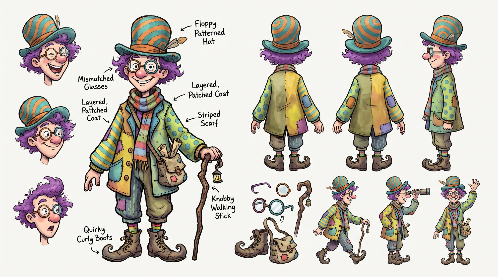

He's wandered off again! Spot Mr. Wiggles in the busiest places in the land.
· ·
Difficulty: change
The clock has stopped. Your puzzle is waiting exactly where you left it.
Five still, crowded storybook illustrations. Everyone stays in place while you search. Off: animated scenes with moving crowds. Each mode has its own unlocks and best times.
Changing mode ends the current search and starts a fresh puzzle after you press Done. Your saved results are kept.
Completed scenes and best times will be cleared. This can't be undone.
Find him at the station, airport, Galleria, Market and Fairground. Finish a scene to unlock the next in that mode, or replay completed scenes for a new hiding place. Animated and Classic progress are saved separately on this device. No accounts needed.

Find Mr. Wiggles needs JavaScript to run.